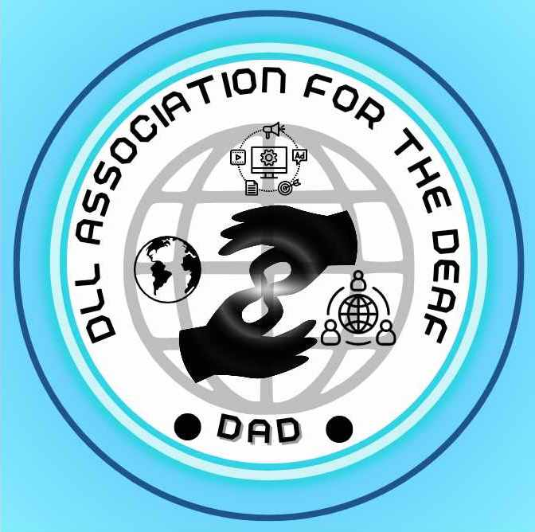

DAD ORGANIZATION
|
DLL Association For The Deaf
(DAD)
|
|
|---|---|
|  | |
| President | Elijah Kirstine A. Salazar |
| Vice-President | Sophia Angela |
| Secretary | Daniel P. Punzalan |
| Treasurer | Kimberly Luzon Bautista |
| Auditor | John Benedict P. Tano |
| P.I.O | Jerrylyn Culla |
| Founder | Nheil Samonte |
| Founded | October 5, 2024 |
| Colors |
National colors:
Red, blue, and white Customary: Light green Orange |
{kind=link}
The DLL Association For The Deaf ( Filipino and Spanish : dll asosasyon para sa mga bingi; lit. ' DAD Organization ') is a student organization in the Lucena city and the old in the local and in Regional 4-A . It is responsible for leading the country throughout most of the 21th century since its founding in 2001; it was the ruling party from 2021 to 2022 (under Presidents unknown dean president)
Ideology
[ edit ]The DLL Association For The Deaf was initially created as a should stand as a leader in promoting research, innovation, and techological advancements that enchance accessibility and improve the quality of life for Deaf individual
Presidential elections
[ edit ]| Year | Candidate | Votes | % | Result | Outcome |
|---|---|---|---|---|---|
| 2021 | Unknown | ? | ? | Lost | Zyra Parafina won |
| 2022 | Zyra Parafina | 10 | 90% | Won | Zyra Parafina won |
| 2023 | Unknown | 15 | 78% | Lost | Elijah Kirstine A. Salazar (NEW) won |
| 2024 | Elijah Kirstine A. Salazar | 21 | 84% | Won | Elijah Kirstine A. Salazar won |
| 2025 | August Officals Voter | ? | ? | ? | ? / |
| 2026 | August Officals Voter | ? | ? | ? | ? / |
| 2027 | August Officals Voter | ? | ? | ? | ? / |